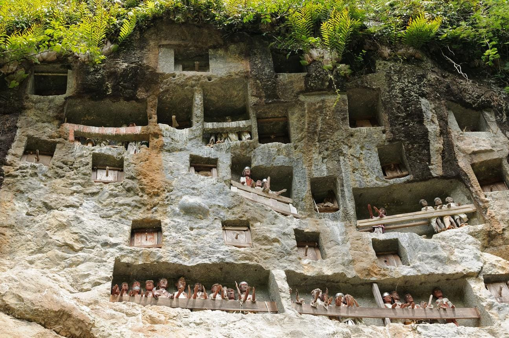
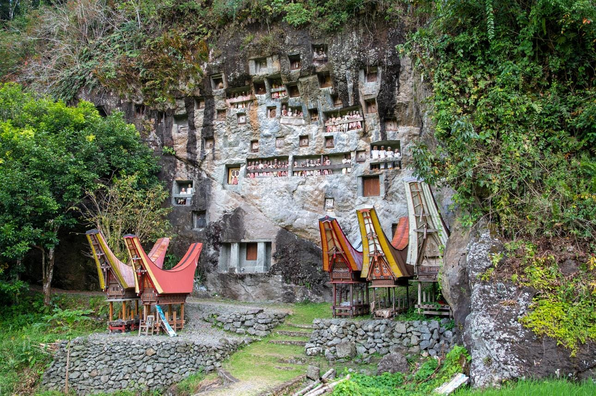
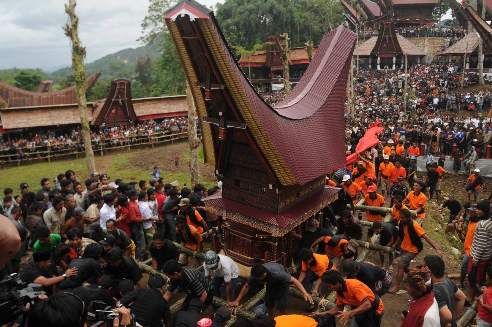

JELAJAHI SULAWESI SELATAN
Mengenal Pesona Wisata Budaya Tana Toraja
Keindahan alam, tradisi, dan warisan leluhur yang memikat.
Keunikan Budaya Tana Toraja
Tana Toraja memiliki kekayaan budaya yang diwariskan secara turun-temurun. Salah satu ciri khasnya adalah rumah adat Tongkonan yang memiliki bentuk atap unik.
Destinasi Wisata Pilihan

Kete Kesu
salah satu desa wisata adat tertua dan paling ikonik di Kabupaten Toraja Utara, Sulawesi Selatan, yang terletak sekitar 4 kilometer di tenggara Kota Rantepao.

Goa Londa
kompleks pemakaman kuno di tebing batu dan gua alami yang berfungsi sebagai tempat penyimpanan jenazah leluhur masyarakat Toraja dan keturunannya.

Buntu Burake
adalah sebuah kawasan perbukitan batu gamping (karst) sekaligus destinasi wisata religi yang terletak di Kelurahan Buntu Burake, Kecamatan Makale.

Goa Lemo
adalah situs pemakaman kuno berupa tebing batu kapur vertikal yang dipahat secara manual menjadi lubang-lubang makam.
Mengenal Tradisi Toraja

Rambu Solo'
Upacara adat kematian sakral yang bertujuan menghormati dan mengantar arwah menuju alam roh atau Puya. Jenazah diperlakukan seperti orang sakit atau tidur sebelum upacara puncak dilaksanakan..

Rambu Tuka'
Upacara pernikahan adat yang sakral dan dipimpin oleh pemangku adat.